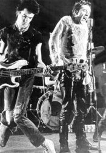

Dennis Morris
From The Giant: The Definitive Obey Giant Site
Official bio:
Dennis Morris started his career at an early age. He was 11 years old when one of his photographs was printed on the front page of the Daily Mirror. A camera fanatic since the age of eight, Dennis was known around his East End neighbourhood as "Mad Dennis," due to his preference for photography over football. After inadvertently stumbling across a particularly feisty demonstration by the PLO one Sunday, the sharp young Dennis took his film to a photo agency on Fleet Street, who promptly sold it to the Daily Mirror for £16. Accustomed to raising money for films and camera parts by taking photos of christenings and birthday parties, Dennis was suddenly on to something; his hobby and all-consuming passion could be done for a living.
It was whilst bunking off school to wait for Bob Marley to arrive for soundcheck at the Speak Easy Club on Margaret Street, that Dennis's music photography career really began. Marley, quite taken with the young teenager who was waiting for him, invited Dennis to come along and take pictures on the remainder of the tour. Running home to Dalston, Dennis packed his bag and jumped on the bus. His photographs of Marley and The Wailers became famous the world over, appearing on the cover of Time Out and Melody Maker before Dennis had even turned 17.
It was Dennis's photos of Marley that caught the eye of the young Johnny Rotten. Rotten, a massive reggae fan, had long admired Dennis's work and requested that he take the first official shots of the Sex Pistols upon signing to Virgin Records. Still in his teens, Dennis was the same age as the Pistols and they soon learned to trust him completely, allowing him unrestricted access to their strange and chaotic existence. For a year, Dennis trailed the band, taking hundreds of undisputed classic shots of the band. The only photographer to put the Sex Pistols fully at ease in front of the lens, Dennis's work with the band established, not only their public image, but also Dennis's position as one of the most exciting and striking music photographers in the country.
When the Pistols split it was Dennis who accompanied John Lydon and Richard Branson on holiday to Jamaica. Now a close friend of Lydon's, the pair set about finding young reggae artists for Branson's record label. Enthused by the A&R bug, Dennis took a job as Art Director at Island Records and signed The Slits and L.K.J to the label. Still working with John Lydon, Dennis was instrumental in creating the seminal P.i.L sleeves, logo, and metal box. His passion for music led him to form his own pioneering black punk band, Basement Five.
The next few years were filled with music, as Dennis broke from the mould of one-trick music smudge and involved himself with making records. In 1984, he formed drum & bass outfit Urban Shakedown, who were picked up by Paul Weller to be the first release on his Respond label. His late '80s hip-hop outfit, Boss, were later signed to Virgin Records and released four singles.
With a career spanning more than 20 years, and a c.v. that reads like a Who's Who of popular music and culture, Dennis Morris continues to photograph the leading musicians of the time, such as Bush, Oasis, and The Prodigy. Several books of his work have been published, such as Bob Marley: A Rebel Life; he has held exhibitions in the UK, Japan, and Canada; and his photographs have appeared in Rolling Stone, Time, People, and the Sunday Times, amongst others.
Dennis Morris now lives in London with his wife and children. A professional photographer of high-regard, he is also involved with projects for the BBC and Channel 4.
A Dennis Morris photograph of the Sex Pistols backstage at the Marquee Club served as the inspiration for Shepard's 2006 print Filth and Fury.
|  |
{kind=link}
{kind=link}
© Copyright |
|---|
| This page contains an image or images of drawings, paintings, photographs, prints, or other two-dimensional works of art, for which the copyright is presumably owned by either the artist who produced the image, the person who commissioned the work, or the heirs thereof. It is believed that the use of low-resolution images of works of art for critical commentary on the work in question, the artistic genre or technique of the work of art, or the school to which the artist belongs on the English-language website thegiant.org, hosted on servers in the United States, qualifies as fair use under United States copyright law. |